Prerequisites
- A character with a T-Pose and other animations.
Import and Setup
To import your animation into Blender:
- Select the File → Import → FBX (.fbx) option.
- In the Blender File View, navigate to your animation and select it.
Under the Armature tab in the window's right panel, enable the Automatic Bone Orientation option and make sure Force Connect Children is disabled.
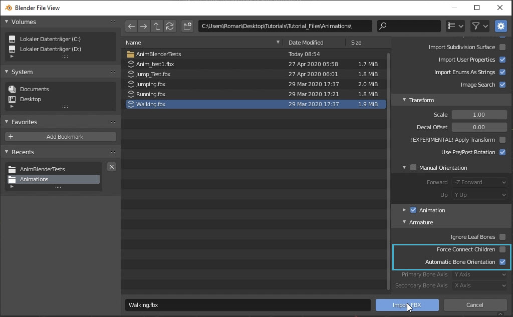
ArmatureEnabling Automatic Bone Orientation ensures that the bones of your character are aligned correctly in Blender.
If this option is not enabled, your character's bones might appear as in the following image; you should still be able to successfully reorient the animation despite this.
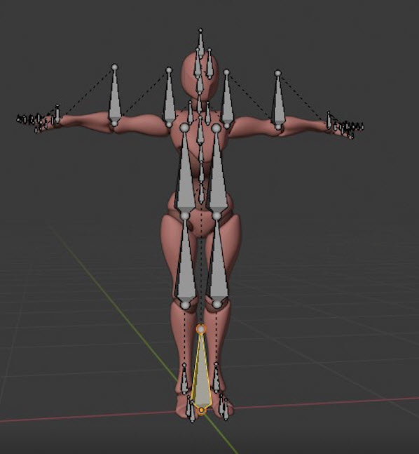
Improperly aligned bones- In the Outliner, you should find your character model listed as Armature within the scene collection; rename it as preferred. Also delete the box, camera and light to avoid confusion.
Next, switch to the Animation tab. On doing this, you should be able to see a preview of your animation in a panel on the left, and a timeline at the bottom. Limit the frame range in the timeline according to the number of frames actually used by your animation.
For example in the image below, since the animation only uses 32 frames, the value of End at the bottom of timeline has been set to 32.
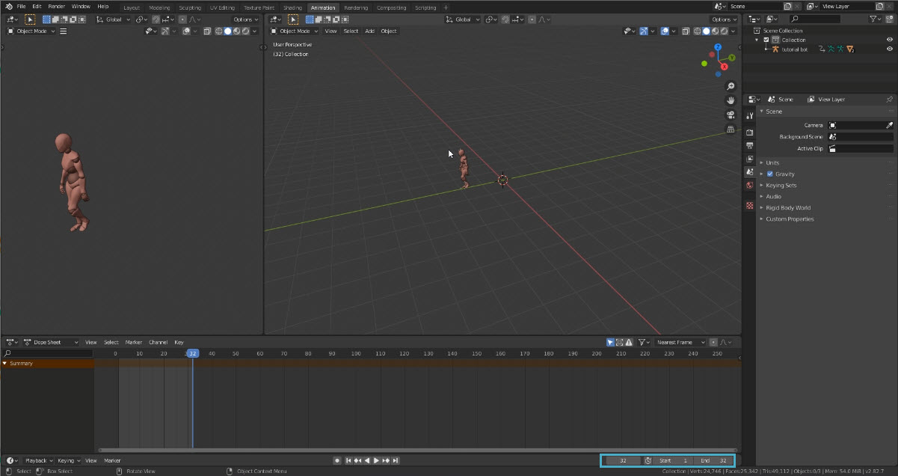
Frame range limited to 32
Setting Up a Root Bone
For the translation of an animation, CRYENGINE requires a root bone that acts as the first bone in the parent-child hierarchy of joints.
Usually the relative position of the character is made the "root", which makes it easier to reorient the model than if, say, the hip joint acted as the root. The root bone is also responsible for translating/rotating the model relative to the world space.
- Begin by reorienting the character model (not the animation); click the renamed model in the Outliner, and then set Rotate Z to 180 in the Transform panel on the right of your Blender window. This ensures that. by default, the model will face in the correct direction in the Engine.
- Switch to Edit Mode and add a bone using the Add → Single Bone option.
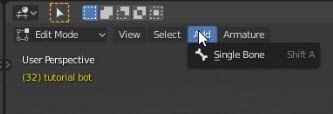
Add → Single Bone - The bone that is added might be larger than required; to scale it, click the arrow at the right end of the header of the 3D Viewport. This opens the Transform panel; reduce the Length value to something around, say, 40 for example.
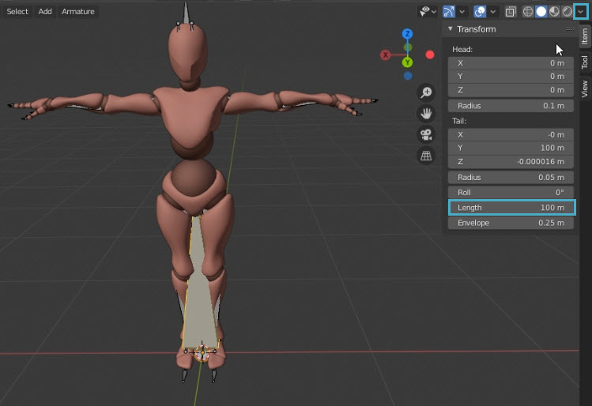
Transform → Length
To be able to see the other bones in the model, navigate to the object data properties by clicking the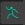
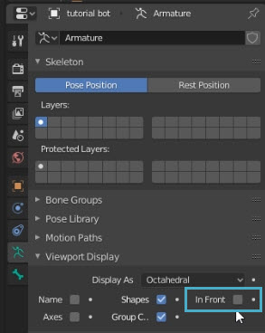
In Front
Pairing the Root Bone with the Hip Bone
To make the root bone a parent of the hip bone, click on the hip bone and then on the root bone while holding Ctrl. This highlights the two bones; press Ctrl + P, and select the Keep Offset Here option from the pop-up menu to complete the process.
The Keep Offset Here option preserves the offset between the two bones, as opposed to connecting them.
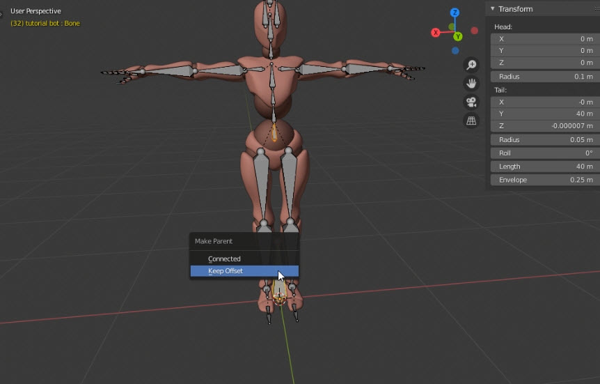
Keep Offset
The hip bone should now be listed as a child of the root in the Outliner.
Reorienting the Animation
- Switch to Pose Mode, click on the root bone in the Viewport, and open the Transform panel again by clicking the arrow at the right end of the Viewport. Change the coordinate system to XYZ Euler in this panel.
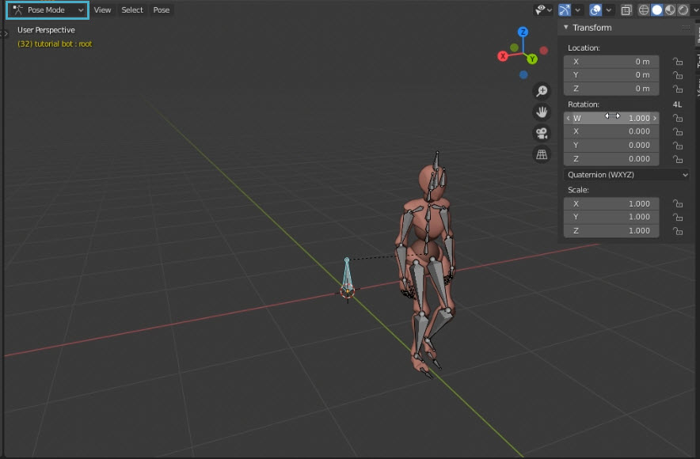
Pose Mode - In the Transform panel, set Rotation X to 90, Rotation Y to 0, and Rotation Z to 180.
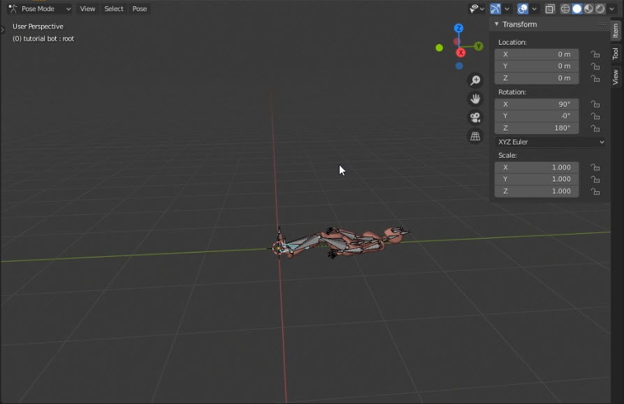
Rotation X, Y, Z
Although at this point, the animation might be aligned as in the image above, it would have still have the correct orientation when imported into CRYENGINE.
If you'd like the animation to play at a fixed position, you can get rid of the forward motion as follows:
- Select the root and hip bone while holding Ctrl.
- Next, select the Pose → Animation → Bake Animation option; deselect Only Selected Bones in the dialog that opens, and press OK. This bakes the entire character instead of the selected bones only, creating an action track for the hip and root bones in the process.
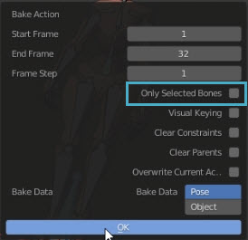
Only Selected Bones disabled - Select everything in the Viewport; in the timeline, expand the action corresponding to the hip bone (mixamorig:Hips in the image example below), and disable its Z Location.
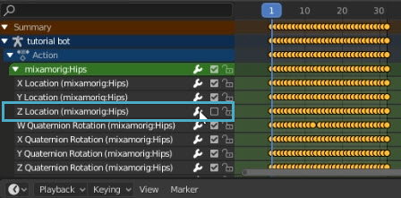
Disabling the hip action's the Z Location - Bake the animation again via Pose → Animation → Bake Animation to complete the process.
Exporting the Animation
- Select the File → Export → FBX (.fbx) option in Blender.
- In the Blender File View window that opens, enable the Bake Animation option.
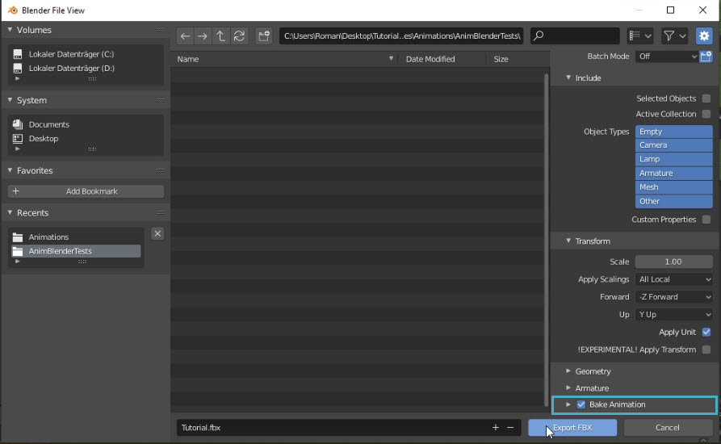
Bake animation - Choose where you'd like to export the FBX file, and click Export FBX to complete the process.
Importing the Animation in CRYENGINE
To test the exported animation in CRYENGINE:
- Create/open an empty level, and then create a new folder in the Asset Browser; drag and drop your FBX file into this folder.
- Once all your imported files have been generated, drag the .cdf (Character Definition File) into the Viewport.
With the character selected in the Viewport, assign an animation to it using the Default Animation field in the Properties panel.
You'll notice that when imported, the FBX file generates multiple animation files.
Every time an animation is baked in Blender, a new action sequence is created, which in turn results in a new animation being created in CRYENGINE. If you've eliminated the forward motion of your animation in Blender, for example, you might end up with at least two animation files in CRYENGINE – one with the forward motion, and one without.
If the animation was correctly reoriented in Blender, you should now be able to see it playing in the Y (forward) direction of CRYENGINE's world coordinate system.